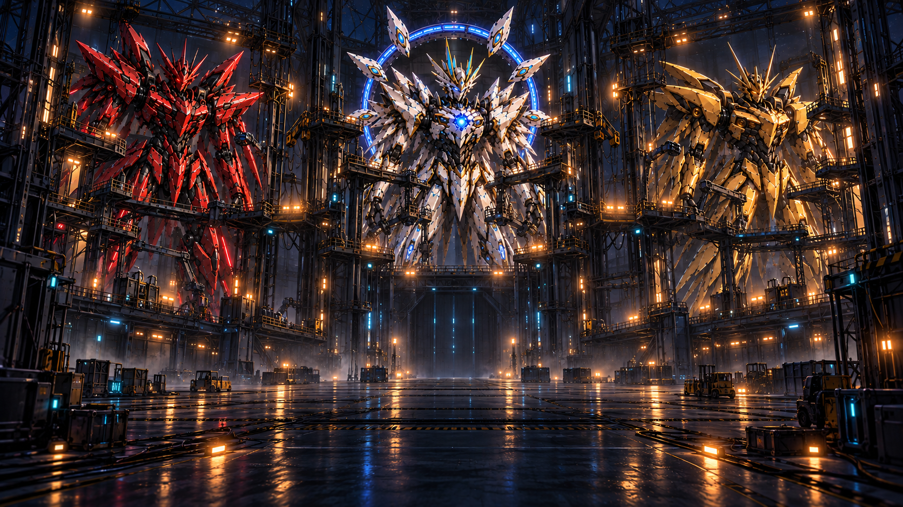
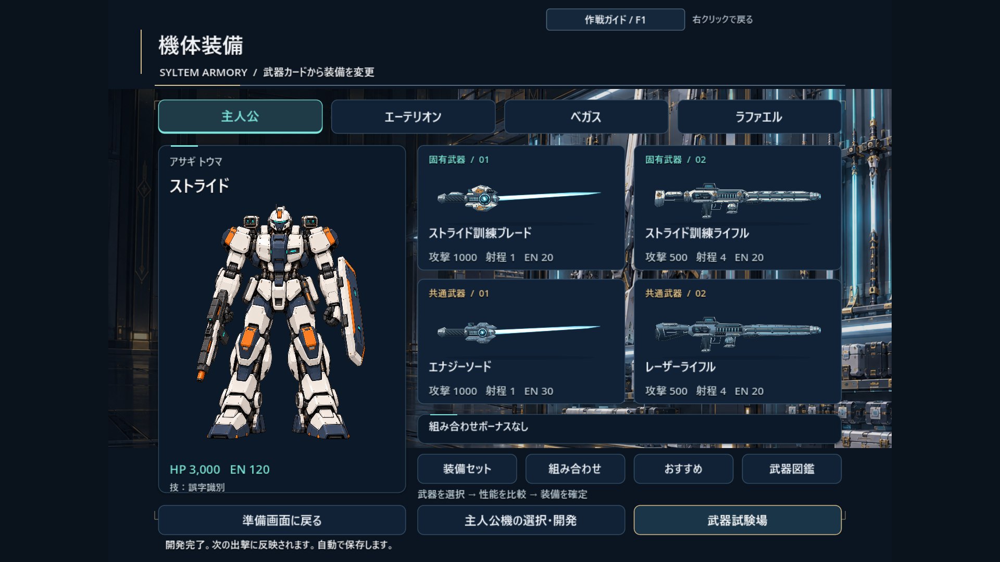
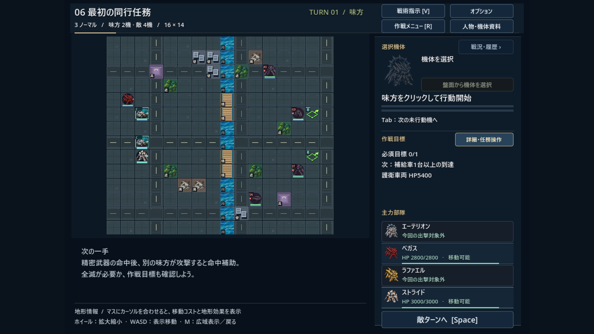
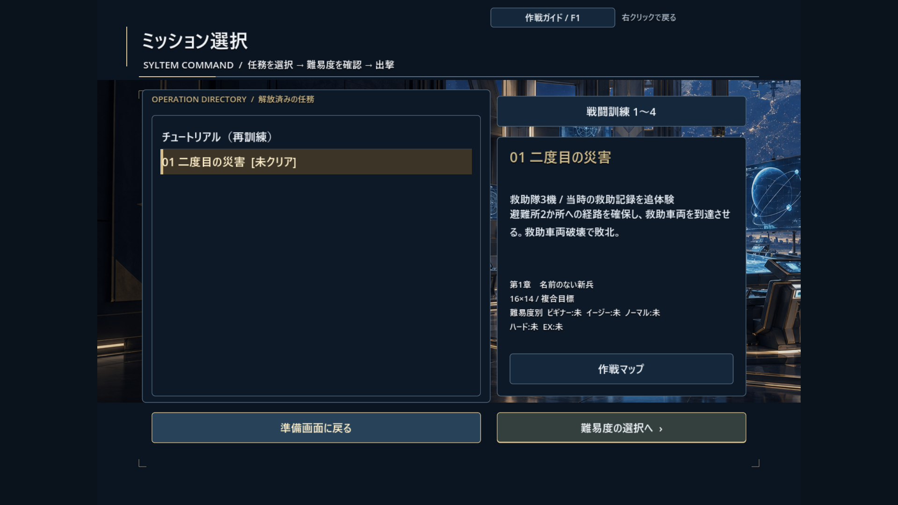
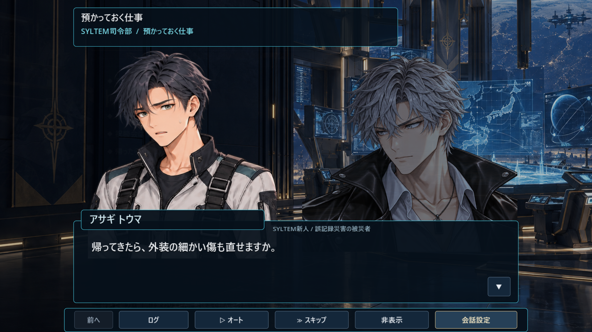
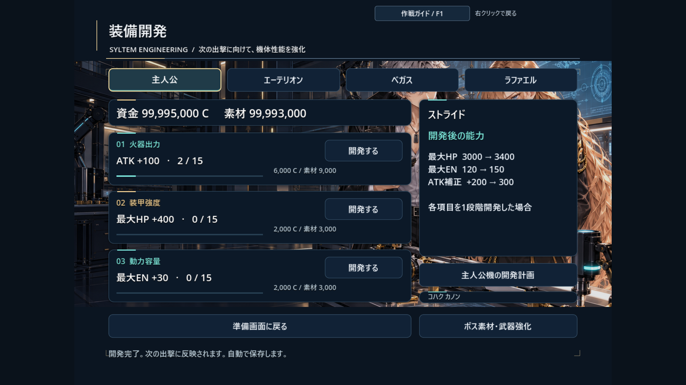
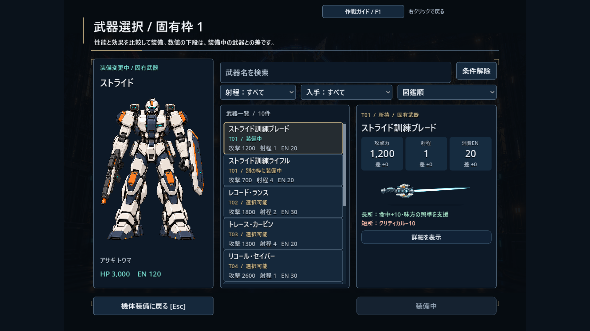
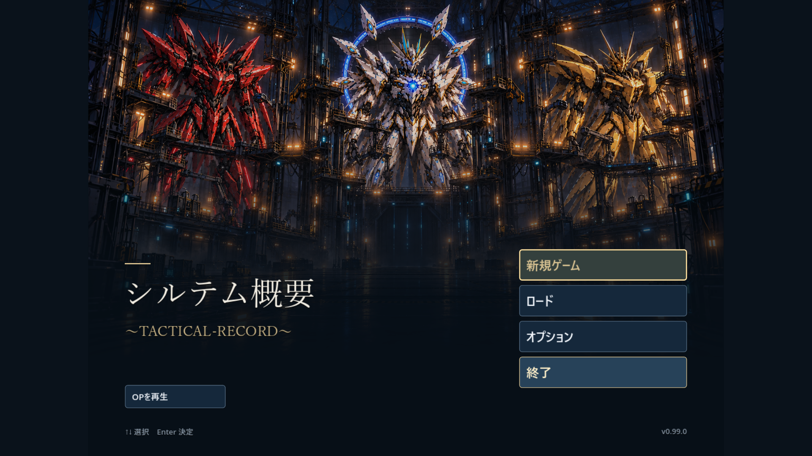

01 / TACTICS
地形と射程を考えて戦う
マス目で区切られた戦場で、機体を移動させて戦います。地形や武器の射程を確認し、攻撃・防御・援護を状況に応じて使い分けます。
移動・攻撃・防御・援護SYLTEM / GAME PROJECT

IN-GAME / SCREEN ARCHIVE
戦う。組み上げる。語り合う。
開発版v0.99の実画面で紹介します。

01 / LOADOUT
機体の全身と四つの装備枠を見ながら、自分の戦い方を組み立てる。

02 / BATTLE
地形、射程、任務の目標。盤面を読み、部隊の一手を決める。

03 / MISSION
目的と難易度を確認し、救助や護衛など、任務ごとの課題に挑む。

04 / BASE TALK
任務の相談も、整備の合間の雑談も。基地で交わす言葉が、仲間の素顔を伝える。
画像は開発中の実画面です。画像をタップ／クリックすると、別タブで拡大できます。
01 / EXPERIENCE
戦闘の合間には、機体の強化や仲間との会話を楽しめます。
01 / TACTICS
マス目で区切られた戦場で、機体を移動させて戦います。地形や武器の射程を確認し、攻撃・防御・援護を状況に応じて使い分けます。
移動・攻撃・防御・援護02 / CUSTOMIZE
任務で経験値や資金、素材を獲得し、機体を強化します。敵の撃破で手に入る武器を集め、威力や射程、消費ENを比較して、作戦に合う装備を選べます。
装備・開発・編成03 / COMMUNICATION
名前と性別を設定した主人公として、SYLTEMの仲間たちと交流します。基地では、任務についての相談や日常の雑談を楽しめます。
主人公設定・基地会話・回想02 / BATTLE SYSTEM
戦闘は、味方と敵が交互に行動するターン制です。移動先や使用する武器、味方を動かす順番を考えながら、作戦目標の達成を目指します。
01 / POSITION
移動できる範囲と、移動後に攻撃できる範囲を確認できます。遮蔽物や高所の効果、壁による射線の遮断を考慮して、有利に戦える位置へ移動します。
02 / PREDICTION
敵が次に行う移動や攻撃、修理、援護を予測表示で確認できます。予測は現在の配置に基づくため、機体が移動したり撃破されたりすると変わることがあります。
03 / HIT & EVADE
攻撃の成否を1〜100の出目で判定し、成功した場合は相手の回避も別に判定します。攻撃前の確認画面には、最終命中率、会心率、予想ダメージ、消費ENが表示されます。
例：攻撃の成功率が80％、相手の回避率が20％の場合、最終命中率は64％です。
04 / WEAPON ROLE
据付型の武器は移動前、機動型は移動後の攻撃を得意とし、狙撃系の武器は離れた位置からの射撃に向いています。精密照準武器を命中させると、同じターン中に別の味方がその敵を攻撃する際、攻撃成功率が上がります。
05 / DEFENSE & LINK
「防御・援護」を選ぶと、受けるダメージを軽減できます。また、隣接する味方の代わりに攻撃を1回受けられます。援護や連携によって仲間との信頼度が上がると、専用の会話や連携技が解放されます。
06 / MISSION
作戦目標には、敵の撃破、救助、護衛、施設の確保などがあります。任務達成に必要な目標と、追加で挑戦できる目標を確認し、各機体の役割を決めて行動します。
03 / GROWTH & LOADOUT
レベルアップや育成ポイントの配分、機体の開発によって能力を伸ばせます。武器の組み合わせも工夫して、部隊の戦力を整えます。
01 / EXPERIENCE
敵の撃破で経験値を獲得できます。通常任務に勝利すると、出撃した仲間全員に参加経験値も入るため、救助や護衛を担当した仲間も成長します。経験値は戦闘後のリザルトで加算され、一定量に達するとレベルが上がります。
02 / GROWTH POINTS
レベルに応じて得られる育成ポイントを、キャラクターごとに用意された二つの系統へ配分します。命中率や火力、生存力など、部隊内での役割に合わせて伸ばす能力を選べます。
03 / ENGINEERING
資金と素材を使って、火器出力・装甲強度・動力容量を個別に強化します。火器出力は攻撃力、装甲強度は最大HP、動力容量は最大ENに影響します。必要な費用と強化後の能力を確認してから開発できます。
04 / WEAPON GROWTH
同じ武器を複数入手すると、重複強化によって攻撃力が上がります。強化の上限は武器ごとに異なります。装備を選ぶ際は、攻撃力に加えて射程や消費EN、得意な距離も確認しましょう。
LOADOUT / 装備を組む
機体専用の固有武器と、各機体で使える共通武器を装備します。変更前に攻撃力・射程・消費ENを比較でき、特定の組み合わせでは能力ボーナスが発生します。

NEW / WEAPON COMPARISON
攻撃力・射程・消費ENを並べて比較。装備中の武器との差や、長所・短所、装着したコアの効果を確認して選べます。さらに詳しい条件や入手方法は「詳細を表示」から読めます。

掲載画像はv0.99の実画面です。数値・デザイン・仕様は開発中のもので、今後変更される場合があります。
04 / WEAPONS & REWARDS
敵を倒すと、武器や開発素材が抽選されます。手に入る武器は任務と難易度によって変わるため、クリア済みの任務でも新しい装備を狙えます。
01 / RANDOM DROP
敵1機ごとに、武器が落ちるかどうかを判定します。成功すると1〜3個の武器を抽選し、任務終了後のリザルトで内容を確認できます。退却ややり直しでは、未受領の武器を持ち帰れません。
02 / DROP POOL
物語が進み、より高い難易度に挑むと、入手できる武器の候補が変わります。武器図鑑では性能と入手条件を確認できるため、欲しい装備を狙って任務を選べます。
03 / RARE WEAPON
一部の固有武器には、専用機で敵を撃破したときだけ抽選されるものがあります。対象となる任務や難易度の条件を満たし、その機体でとどめを刺すことで入手の機会が生まれます。
04 / DUPLICATE BONUS
同じ武器を入手すると、所持数に応じて攻撃力が上がります。数が増えるほど1個あたりの上昇量は小さくなり、武器の基礎攻撃力に応じた上限で止まります。
05 / WEAPON CORE
ボスを撃破して任務をクリアすると、能力補正と特殊効果が抽選されたコアを獲得できます。所持武器に1個ずつ装着でき、交換時には以前のコアが戻ります。装着には資金と素材を使います。
06 / MISSION REWARD
撃破報酬とは別に、任務の評価や任意目標の達成による報酬もあります。通常任務で得られる開発補給は、その難易度で初めてクリアしたときに増えます。集めた資金と素材を機体の強化に回せます。
現在の実装では、武器が落ちる確率は任務と難易度に応じて25〜85％です。ドロップ判定に成功した後、個数を「1個：75％／2個：20％／3個：5％」の割合で決めます。武器の種類は、入手条件を満たす候補から抽選します。
この個数の割合は、ドロップに成功した場合の内訳です。必ず武器が手に入るわけではありません。また、再訓練では武器を獲得できません。数値は開発中のもので、今後調整される場合があります。
05 / MISSION PART
ミッションでは、任務前の会話や戦闘中の通信、帰還後の会話を通して物語が進みます。出撃前に作戦の背景と目標を確認し、現場の状況に合わせて部隊を動かします。
ブリーフィングで任務の目的を確認します。必須・任意の目標や、救助・護衛などの達成条件を把握します。
準備画面で機体の装備を整えます。出撃前には、指定された範囲内で味方の初期配置を調整できます。
戦闘中の通信と目標の進捗を確認しながら行動します。追加報酬が得られる任意目標にも挑戦できます。
リザルトで経験値や報酬を確認します。帰還後は仲間との会話を経て、次の任務に備えます。
06 / DAILY CONVERSATION
基地の「仲間と話す」では、SYLTEMのメンバーとの個別会話を楽しめます。任務についての相談のほか、食堂での雑談や整備の合間の冗談など、日常のやり取りも収録しています。
01 / BASE LIFE
任務で感じた不安や疑問を話す場面もあれば、休憩中に軽口を交わす場面もあります。戦場では見られない仲間の一面や、普段の掛け合いを楽しめます。
個別会話・相談・日常の雑談02 / YOUR REPLY
物語の中で選んだ主人公の返答が、その後の会話に反映される場面があります。物語の進行や任務の結果に応じて、話せる内容も増えていきます。
主人公の返答・進行状況・任務の結果03 / MEMORIES
最後まで読んだ基地の会話は、資料室の回想に保存されます。気に入ったやり取りや、以前の場面をもう一度読みたいときに見返せます。
既読の会話・資料室・回想07 / MORE SYSTEMS
装備の試し撃ちや資料の閲覧、会話の再生など、戦闘以外にも使える機能を用意しています。
01 / DIFFICULTY
ビギナーからエキスパートまで5段階。最初はビギナー・イージー・ノーマルから選び、進行に応じて上位の難易度が解放されます。クリア済みの任務にも再挑戦できます。
02 / WEAPON TEST
敵の種類や距離、地形を変えて、現在の装備を試射できます。威力だけでなく、移動前後や攻撃位置による違いも確かめてから、実戦の装備を決められます。
03 / ARCHIVE
人物や敵、武器の資料を閲覧できます。物語の進行や遭遇記録に応じて情報が解放され、既読の会話は回想から読み返せます。
04 / SOUND ROOM
資料室のサウンドテストでは、解放した楽曲を試聴できます。一時停止、再生位置の変更、リピートにも対応しています。
05 / ACHIEVEMENTS
物語の進行や戦闘、収集などに応じて実績と称号を獲得できます。任務後の戦術レポートでは、各パイロットの与ダメージや命中実績などを確認できます。
06 / OPTIONS
文字の拡大、音量、戦闘演出の速度などを設定できます。会話にはログ・オート送り・スキップがあり、好みのペースで読み進められます。
08 / TITLE SCREEN
開発中のタイトル画面です。画像をタップ／クリックすると拡大できます。

09 / DEVELOPMENT LOG
2026年10月22日時点の開発記録です。内容や画面は今後変更される場合があります。
全6章・72任務で構成されています。現在は、装備選択や性能比較を中心に、各画面の読みやすさと操作性を調整しています。
v0.99 / WEAPON COMPARISON
攻撃力・射程・消費ENをカードにまとめ、装備中の武器との差を表示。特性の長所・短所とコア効果を整理し、詳しい説明はボタンで開けるようになりました。
v0.98 / MACHINE & LOADOUT
装備画面と武器選択画面に、機体の全身イラストを採用。機体・所持武器・性能比較を並べ、選択中の機体を確認しながら装備を変更できます。
v0.95–0.97 / WEAPON DESIGN
専用武器のシルエットを機体ごとに描き分け、剣は繊細な光の刃へ、ライフルは長く細い銃身へ。装備選びを楽しめるデザインに更新しました。
10 / INFORMATION
このページでは、開発中のゲームを紹介しています。一般向けの公開方法や配布時期は未定です。
現在の開発対象はWindows PCです。この紹介ページはスマートフォンでも閲覧できます。